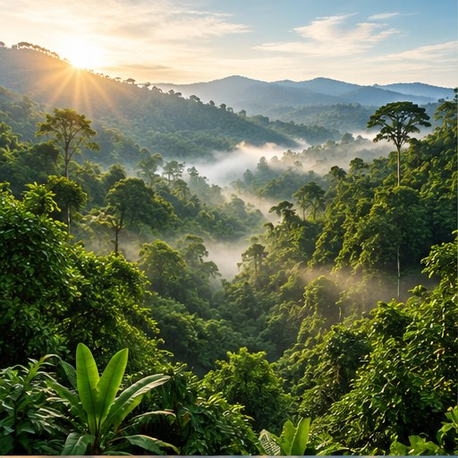

Apa yang terjadi hari ini?
Kondisi atmosfer dalam waktu singkat, misalnya hujan sore ini, suhu hari ini, atau angin kencang besok.
Memahami istilah dan proses ilmiah membantu kita membedakan fakta, tren jangka panjang, dan kejadian cuaca sehari-hari.

Perubahan iklim adalah perubahan jangka panjang pada pola suhu dan kondisi cuaca. Perubahan dapat terjadi secara alami, tetapi pemanasan global yang diamati sejak era industri terutama disebabkan oleh aktivitas manusia yang meningkatkan konsentrasi gas rumah kaca.
Pemanasan global merujuk pada kenaikan suhu rata-rata permukaan bumi. Perubahan iklim memiliki cakupan lebih luas, termasuk perubahan pola hujan, kondisi laut, musim, dan risiko kejadian ekstrem.
Kondisi atmosfer dalam waktu singkat, misalnya hujan sore ini, suhu hari ini, atau angin kencang besok.
Statistik dan pola cuaca selama periode panjang, biasanya dinilai dari data puluhan tahun.
Sinar matahari melewati atmosfer dan menghangatkan permukaan bumi. Bumi kemudian melepaskan energi sebagai radiasi inframerah. Gas rumah kaca menyerap dan memancarkan kembali sebagian energi tersebut, sehingga membantu menjaga bumi tetap hangat. Peningkatan konsentrasi gas rumah kaca memperkuat efek ini dan menyebabkan pemanasan tambahan.
Energi masuk ke sistem bumi.
Permukaan memancarkan energi inframerah.
Gas rumah kaca menyerap dan memancarkan kembali energi.
Efek rumah kaca alami penting bagi kehidupan. Tantangan perubahan iklim muncul karena aktivitas manusia meningkatkan konsentrasi gas rumah kaca dan mengubah keseimbangan energi bumi.
Bacaan lanjutan: NASA Climate Change dan IPCC.